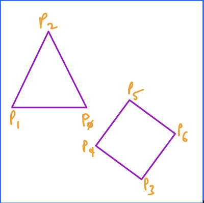

Chapter 3 Edge Lists & Matricies
Section 3.1 Using Edge Lists
Until we start to render 3D shapes, all of our images will be generated by calling
draw_line between pairs of points. To help organize, and later modify, our images better, we will store these points in an edge list, and only call \(draw_line\) (and thus modify our screen object) when we are ready to render the entire image. This sets up our initial graphics pipeline:- All shapes will be added as a series of edges to the main edge list.
- Any transformations (more on that later) will be applied to the main edge list.
- When we are ready to see/save an image, we will iterate over the edge list calling
draw_line.
There are a few options for maintaining edge lists. Consider the following image:

The triangle portion could be represented by any of the following edge lists:
\begin{equation*}
\begin{bmatrix}P_{0} \amp P_{1} \amp P_{2}\end{bmatrix}
\end{equation*}
Here, we would generate the image by iterating through the edge list 1 point at a time, connecting each point with the next one, and include a final line back to the initial point. This works well if the entire image was a single closed object, but less so for open ended or disjoint objects.
\begin{equation*}
\begin{bmatrix}P_{0} \amp P_{1} \amp P_{2} \amp P_{0}\end{bmatrix}
\end{equation*}
This is very similar to the first, execpt there's no implicit connection from the last point to the first. This means we could have open ended shapes, but disjoint shapes, like the diamond, would not be as simple, since in this option, by adding \(P_{3}\) we wouild get a line \(\overline{P_{0}P_{3}}\text{,}\) which we don't want.
\begin{equation*}
\begin{bmatrix}P_{0} \amp P_{1} \amp P_{1} \amp P_{2} \amp P_{2} \amp P_{0}\end{bmatrix}
\end{equation*}
In this version, we would generate the image by iterating over the list by pairs of points, drawing the lines between them. The advantage to this approach is that the list need not "know" anything about the image and what it contains. Every edge is explicitly defined. The downside is that there is a lot of duplication of points, but hey, memory's cheap.
We will focus on the last implementation, the other two are viable, but require extra work to be able to draw any arbitrary image (such as a separate list containing # of edges per shape, or a "delimeter" point). It is important to remember that points are \((x, y, z)\) triples, so our edge lists would more accurately look like the following:
\begin{equation*}
\begin{bmatrix}x_{0} \amp x_{1} \amp x_{1} \amp x_{2} \amp \dots \amp x_{n}
\\\ y_{0} \amp y_{1} \amp x_{1} \amp y_{2} \amp \dots \amp y_{n}
\\\ z_{0} \amp z_{1} \amp z_{1} \amp z_{2} \amp \dots \amp z_{n}
\\\ 1 \amp 1 \amp 1 \amp 1 \amp \dots \amp 1
\end{bmatrix}
\end{equation*}
The extra row of 1s at the bottom is necessary for certain transformations that we will cover later.
Section 3.2 Matrix Math for Graphics
Now that we are arranging our image information as edge matrices, we should look into how we can leverage matrix math for graphics purposes. To start, we need only talk about two concepts, matrix multiplication and the multiplicative identiy matrix.
Subsection 3.2.1 Matrix Multiplication
In order to mulply two matrices, \(AB\text{,}\) the number of columns in \(A\) must equal the number of rows in \(B\text{.}\) So if \(A\) is a \(4\times N\) matrix, then \(B\) must be \(n\times4\text{.}\)
Matrix multiplication is _not_ commutative, so \(AB \neq BA\text{.}\) This will be useful to us later on. To perform \(AB\text{,}\) you match up each row of \(A\) with the coresponding column in \(B\text{,}\) multiply each coresponding element, and add those products together to find each element in the product matrix. For a simple example, consider the following:
\begin{equation*}
\begin{bmatrix}1 \amp 2 \amp 3 \amp 4\end{bmatrix} \begin{bmatrix}a\\b\\c\\d \end{bmatrix} = \begin{bmatrix}1a + 2b + 3c + 4d\end{bmatrix}
\end{equation*}
For a more complex example:
\begin{equation*}
\begin{bmatrix}1 \amp 2 \amp 3
\\ 4 \amp 5 \amp 6
\\ 7 \amp 8 \amp 9\end{bmatrix}
\begin{bmatrix}a \amp b
\\ c \amp d
\\ e \amp f\end{bmatrix} =
\begin{bmatrix}1a + 2c + 3e \amp 1b + 2d + 3f
\\4a + 5c + 6e \amp 4b + 5d + 6f
\\7a + 8c + 9e \amp 7b + 8d + 9f\end{bmatrix}
\end{equation*}
Subsection 3.2.2 Multiplicative Identity
The multiplicative identiy matrix must:
- Be a square matrix.
- Have a diagonal of 1s, from upper-left to lower-right corners.
- Have all other values be 0.
A \(4\times4\) identity matrix:
\begin{equation*}
\begin{bmatrix}1 \amp 0 \amp 0 \amp 0
\\\ 0 \amp 1 \amp 0 \amp 0
\\\ 0 \amp 0 \amp 1 \amp 0
\\\ 0 \amp 0 \amp 0 \amp 1
\end{bmatrix}
\end{equation*}